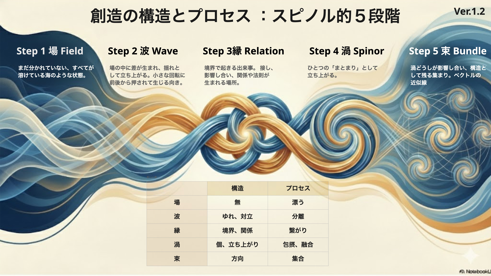

--color-* / --kesson-md-* / --kesson-error-*
人間: ブラウザで見て「このカードのこの色や余白を変えたい」を指差すためのページです。AI: HTML ソース内のコメント、data-component、data-variables、下の変数テーブルを読んで、CSS 変数とコンポーネントの対応を把握するためのページです。
正本は 3 層です。トークン値は src/styles/shell.css、コンポーネントの見本と意図はこのページ、変更ルールは docs/design-system.md を見ます。
--color-* / --kesson-md-* / --kesson-error-*
--kesson-font-* / --kesson-letter-* / --kesson-topbar-*
--kesson-radius-* / --kesson-transition-* / --kesson-topbar-*
--kesson-card-* / --kesson-offcanvas-* / --kesson-viewer-*
--kesson-ui-* / --kesson-focus-* / --reports-font-step
現在の shell.css :root は 116 個の root token と、Reports の文字調整用ブリッジ --reports-font-step を持ちます。加えて reports.css には 40 個の component-local 変数、viewer.css と dev-legacy.css には --bs-offcanvas-width の橋渡し変数があります。
AI は prefix を起点に読むと速いです。色は --color-*、文字は --kesson-font-* と --kesson-topbar-*、表層は --kesson-card-* や --reports-* が担当します。
変更前は docs/design-system.md を読んだ上で、このページの対象コンポーネントまで飛び、下の変数テーブルから root token と local var を辿ります。
ベース 6 色と Markdown / error 系の派生色をまとめて確認します。色相の変更はここを見てから、カード、リンク、MD 表示、エラー表示まで影響範囲を辿ります。
サイト全体の基本色です。特に --color-accent と --color-sub-text はカード、ボタン、topbar、reports の土台になります。
--color-accent
--color-sub-text
--color-highlight
--color-link
--color-heading
--color-bg-body
Markdown 本文と異常表示の色です。現状の CSS では viewer 側に同値の直書きも残っているため、ここは将来的な集約候補です。
--kesson-md-h1
--kesson-md-h2
--kesson-md-link
--kesson-md-quote
--kesson-md-inline-code-bg
--kesson-error-color
display serif、UI serif、mono と、UI 用サイズ・letter spacing をまとめて見ます。topbar 系の文字トークンもここに含まれます。
display は見出し、UI serif は注釈・ボタン、mono は制御とメタ情報に使われています。
--kesson-font-serif-display
--kesson-font-serif-ui
--kesson-font-mono-ui
--kesson-font-size-ui-xs, --kesson-font-size-ui-sm, --kesson-font-size-ui-arrow
topbar、スクロールヒント、ナビゲーションラベル、開発トグルなど、ページ全体を包む UI 部品です。固定配置のものはここでは静的レイアウトに落として見せています。
index.html の topbar を縮小して再現しています。ナビゲーションの見え方とコラボ注記の強さをここで確認します。
scroll hint、left link、control guide、開発トグルの色と存在感をまとめて見ます。
ボタンと操作チップです。共通 action token と articles / reports の派生 UI を並べて、硬さやコントラストを揃えます。
--kesson-action-* は canonical token として定義されています。Bootstrap .btn を土台にし、色とコントラストだけを token で上書きします。
カード群、placeholder、metric panel をまとめています。カードの浮遊感は --kesson-card-bg と shadow token の組み合わせで決まります。
articles / reports 共通の土台です。border を上げると輪郭が立ち、shadow を上げると浮遊感が増します。

創造モデルの概要カード。記事、reports feature、creation card がこの系列に乗ります。
articles.css 側の placeholder。実データがない領域でもトーンを崩さず仮置きできるようにしています。
横パネルとモーダル viewer のガラス面です。背景が暗いので、blur と border は少しの差でも印象が大きく変わります。
offcanvas-kesson は width と background を token で制御しています。本文文字色とリンク色は今後 token 利用を増やせる余地があります。
Markdown や外部埋め込みの viewer 面です。スクロールバーも含めて確認できます。
ここでは overlay と glass border の見え方を確認します。中の本文要素は次のセクションで詳しく見ます。
見出し、リンク、引用、コード、テーブルをまとめて表示します。AI はこのブロックを見ると、Markdown 系 token の実際の着地点を把握できます。
viewer.css 側は一部が値直書きなので、ここで見た値と shell token を照合しながら調整する前提です。
この本文は カード や reports と同じ root palette を共有します。inline code は var(--kesson-md-inline-code) を想定しています。
ダークテーマ上では引用を少し抑え、リンクだけをはっきり光らせる。
const target = document.querySelector('[data-component=\"kesson-card\"]');| Role | Variable |
|---|---|
| Link | --kesson-md-link |
| Quote | --kesson-md-quote |
フォーム要素は主に dev panel と reports 周辺で使われます。focus ring と入力面の暗さをここで確認します。
dev-panel.css の input / label / range を縮小展示しています。トグルは runtime chrome と同じ token を共有します。
articles の読み込み失敗表示に相当します。
記事データを読み込めませんでした。ネットワークと JSON を確認してください。
reports.css の local var で組まれている領域です。root token を束ねた派生層なので、reports だけを変えるのか root から変えるのかをここで判断します。
palette は Dxx カードのバリエーション、panel 系は overview と metric card の土台、font step は文字拡大縮小のブリッジです。
AI collaborative reports. Local vars here are derived from root palette and spacing tokens.
L3 synthesis
発達心理学
認知科学
src/font-size-ctrl.js が管理するフォントサイズ調整機能のデモです。A+ / A- ボタンで全 CSS 変数が連動します。step は localStorage に保存され、ページ間で共有されます。
ボタンを押すとページ全体のフォントサイズが変わります。step 範囲: -1 ~ 7 (default: 0)
section-heading: SAMPLE HEADING
card-title: Sample Card Title
card-text: Sample card description text
overlay-tagline: Sample tagline
footer-line: <footer sample text />
topbar-main-title: creation-space
h1-size: Hero Heading